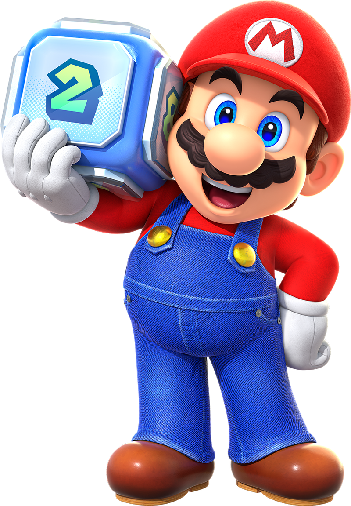
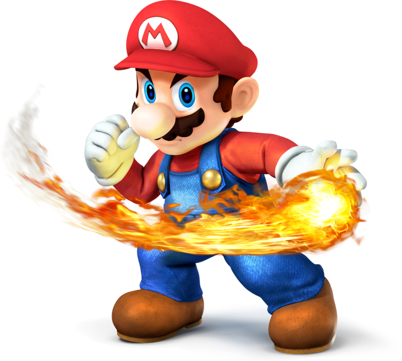
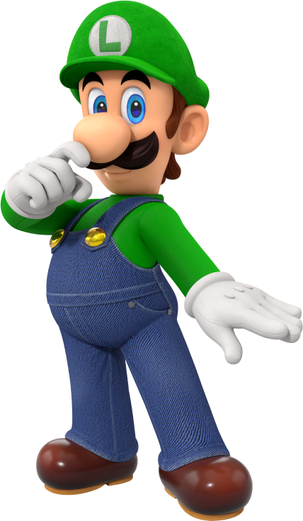
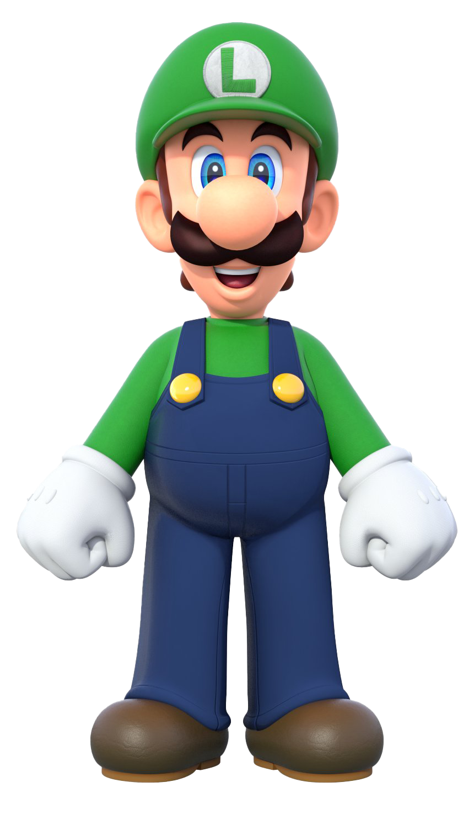
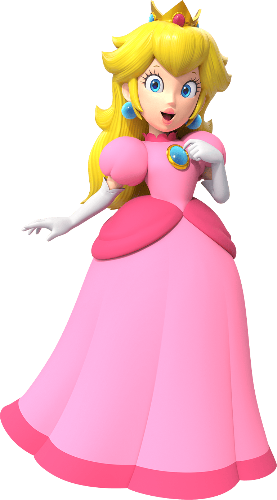
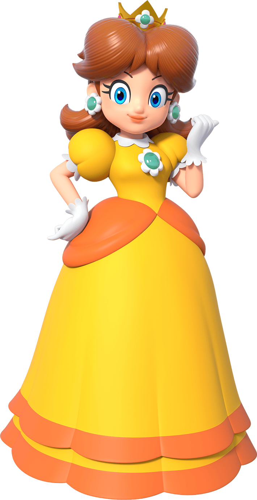
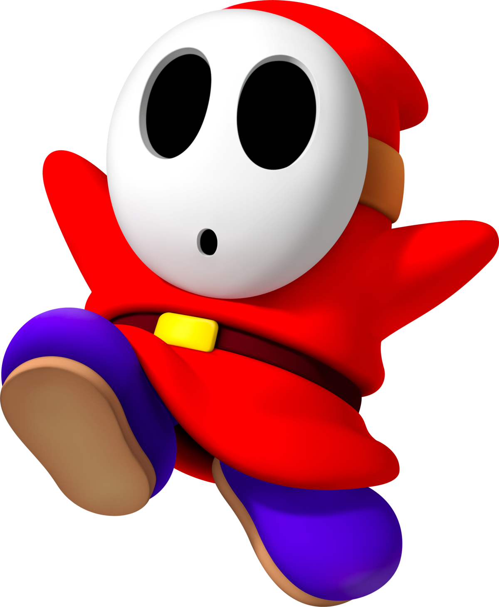

Super Mario Party: Jamboree
| Image | Info | Ability |
|---|---|---|
|  | Nintendo produced Mario, one of the most recognizable video game characters ever, who made his debut in Donkey Kong in 1981. Originally shown as "Jumpman," a carpenter, Mario was redesigned by Shigeru Miyamoto to become a plumber, a position that would become essential to his persona. Since then, Mario—who is easily recognizable by his red hat, blue overalls, and characteristic mustache—has emerged as the face of Nintendo and a mainstay of the gaming community. |

|
|  | Mario's taller and younger brother Luigi has emerged as a legendary figure in his own right. Originally designed by Nintendo as a companion character, Luigi originally appeared in Mario Bros. (1983) as the character of the second player. He is usually identified by his green hat and overalls. |

|
|  | One of Nintendo's most recognizable figures is Princess Peach Toadstool, also referred to as Princess Peach, who rules the Mushroom Kingdom. She was created by Shigeru Miyamoto and debuted as the damsel in distress in Super Mario Bros. (1985). Since then, she has emerged as a key character in the Mario franchise, serving as both a playable character and a crucial ally. |

|
|  | One of the main characters in the Mario series is Princess Daisy, who is the princess of Sarasaland. In 1989, she made her debut in Super Mario Land after being designed by Nintendo. Daisy has a more vivacious and athletic personality than Princess Peach, who is frequently perceived as being more subdued and conventional. |
.png)
|
|  | Known for his unusual mask and hood, Shy Guy is a playable character and frequent antagonist in the Mario series. Shy Guy, a Nintendo creation, made his debut in Super Mario Bros. 2 in 1988 and has since grown to be a beloved character in other Mario titles. |
.png)
|